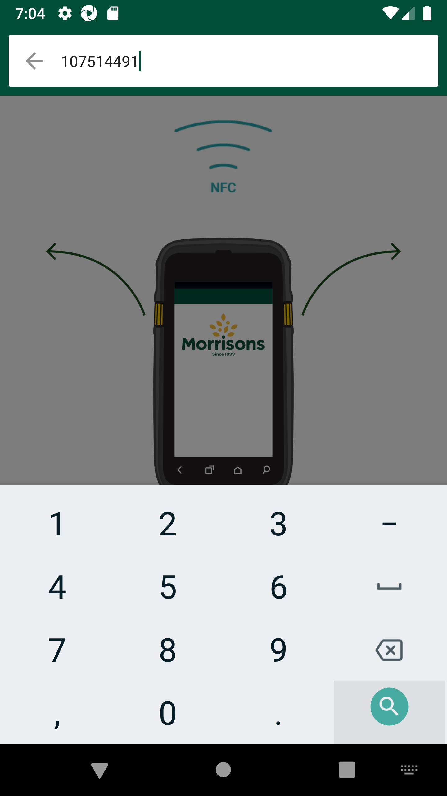
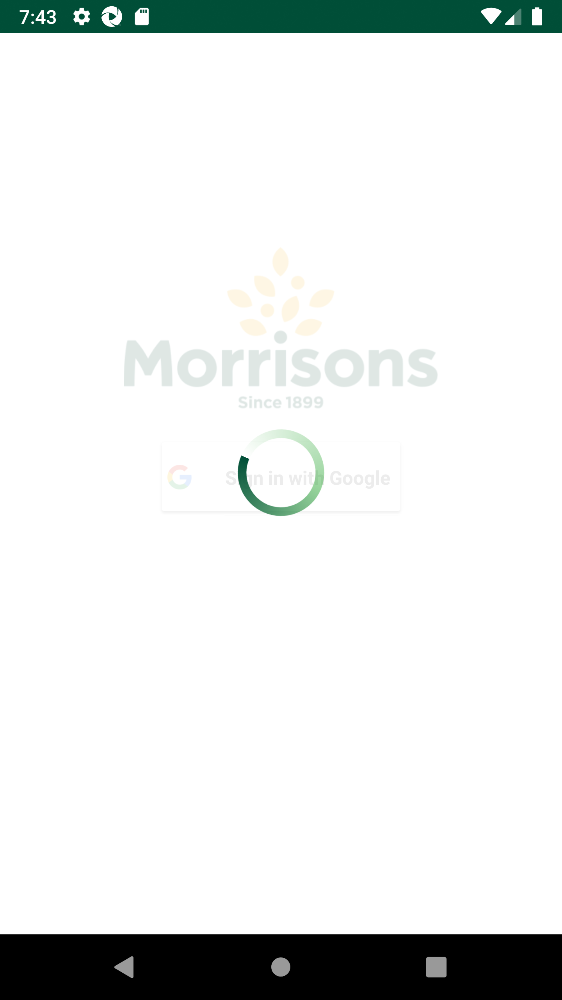
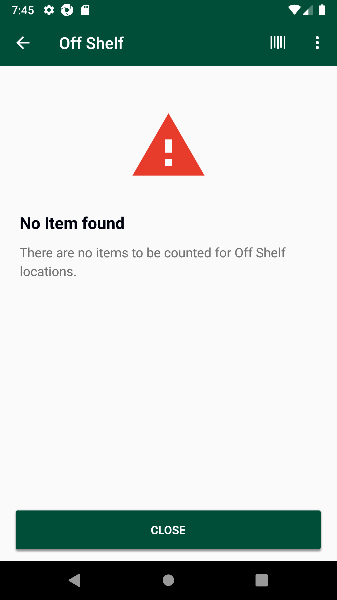
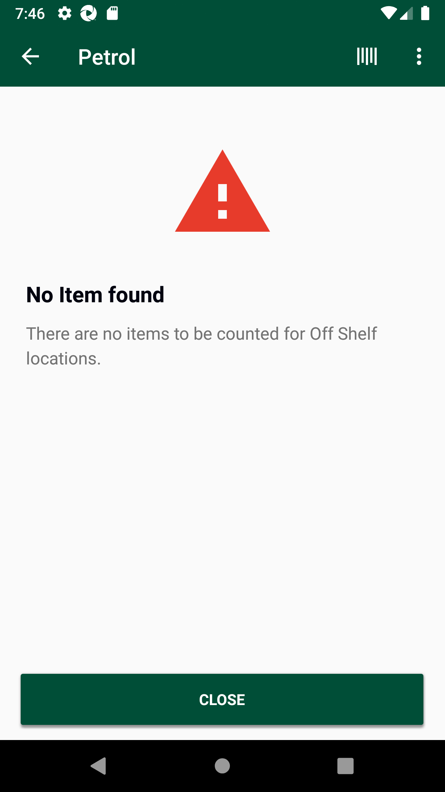
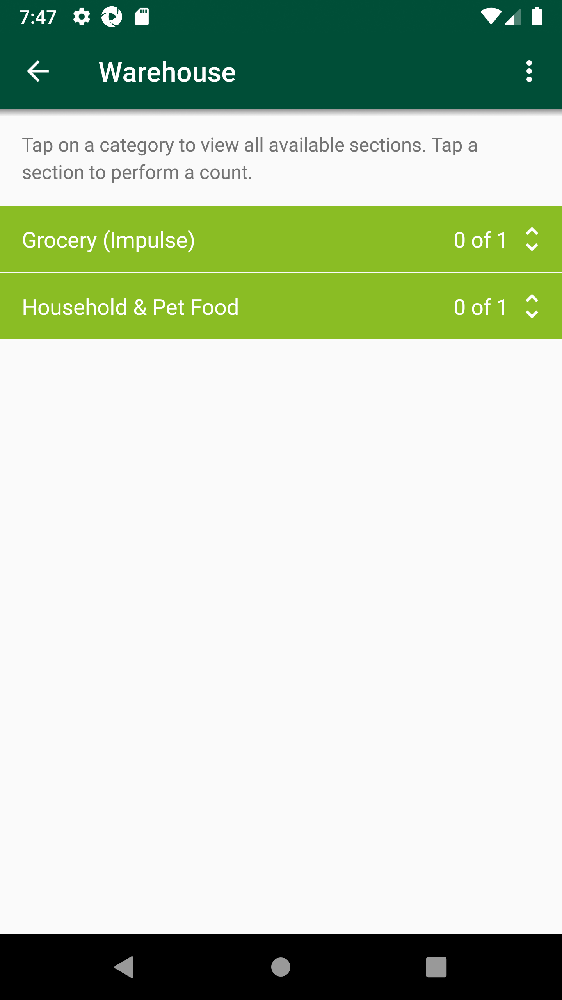

-
Verify AM GLH Functionality
8:24:00 PM / 00:49:25:666 Fail
Verify AM GLH Functionality
01.29.2024 8:24:00 PM 01.29.2024 9:13:26 PM 00:49:25:666 · #test-id=1@store_walk @regression @NewAm_glh1_701FailTO CHANGE THE DEVICE TIMINGS AS REQUIREDPassTO CHANGE THE DEVICE TIMINGS AS REQUIREDGiven I send the time "07" and mins "00" and meridiem "am" and current date in listThen I Change timeThen I Change dateFailTO CHANGE THE DEVICE TIMINGS AS REQUIREDcom.morrisons.common.action.Hook.smaBeforeTime()Given I send the time "03" and mins "00" and meridiem "pm" and current date in listStep skippedThen I Change timeStep skippedThen I Change dateStep skippedPassCreate SOH for itemsPassCreate SOH for itemsGiven I create SOH for the Items based on Response code "" " " " " " " PassTC-01_Verify UI of Gaps, Count is displayed as expected or notWhen I enter Username and Password for SMA Collegue userAnd I click on login button for SMAThen I click on 'stockMngmtText' on page 'HomePagePO_New'Then I click on "Shop Floor - Gap Scan"Then I click on Fixture ScanAnd I click on Back ButtonThen I click on OffShelfAnd I click on Back ButtonThen I click on PetrolAnd I click on Back ButtonThen I click on WareHouseAnd I click on Back ButtonThen I click on ReviewAnd I click on Back ButtonThen I click on SummaryAnd I click on Back ButtonPassDelete GLH Storewalk from ServicePassDelete GLH Storewalk from ServiceGiven request is made to capture access token and post endpoint for user v2 for "grant_type=getFromResponse"Then I Verify the Response Code for the following "- " is 200
And I get the field value for the field "access_token"And Get the generated Access Tocken for SMA app Login ServiceGiven Get request is made to Get storewalks service for current dateAnd Get Operation perform on service requestThen Verify Get storewalks service response for current dateThen Delete request is made to Delete GLH storewalk for store id "8"FailTC_02_16131_Scan product as Gap in fixture scan and verify records are present in warehouse. Delete product from fixture and verify records are not present in warehouse.FailTC_02_16131_Scan product as Gap in fixture scan and verify records are present in warehouse. Delete product from fixture and verify records are not present in warehouse.When I enter Username and Password for SMA Collegue userAnd I click on login button for SMAThen I click on 'stockMngmtText' on page 'HomePagePO_New'Then I click on "Shop Floor - Gap Scan"Then I click on Fixture ScanAnd I click on barcode entry ButtonThen Enter "107514491" numberAnd I click on GAP buttoncom.morrisons.common.action.Hook.afterScenario(io.cucumber.java.Scenario)
And I choose the plan from popup if multiple records presentStep skippedThen I verify the if it is GAPStep skippedAnd I click on Back ButtonStep skippedThen I click on WareHouseStep skippedThen I verify my min is present in the "Household & Pet Food"Step skippedAnd I click on Back ButtonStep skippedGiven request is made to capture access token and post endpoint for user v2 for "" Step skippedThen I Verify the Response Code for the following "- " is 200
Step skippedAnd I get the field value for the field "access_token"Step skippedAnd Get the generated Access Tocken for SMA app Login ServiceStep skippedGiven Get request is made to Get storewalks service for current dateStep skippedAnd Get Operation perform on service requestStep skippedThen I verify Product id "107514491" for Store id "8" and Walk type "GapsHighsLows" is present in Get storewalk serviceStep skippedThen I verify Section status is "Available" in Get storewalk serviceStep skippedThen I click on Fixture ScanStep skippedThen I click on ViewList of GapsLowHighStep skippedAnd I Delete products from fixtureStep skippedAnd I click on Back Button till we get to the "Warehouse" pageStep skippedThen I click on WareHouseStep skippedThen I verify that record is deleted from WareHouseStep skippedPassTC_03_16131_Scan product as Count in fixture scan and verify records are present in warehouse. Delete product from fixture and verify records are not present in warehouse.PassTC_03_16131_Scan product as Count in fixture scan and verify records are present in warehouse. Delete product from fixture and verify records are not present in warehouse.When I enter Username and Password for SMA Collegue userAnd I click on login button for SMAThen I click on 'stockMngmtText' on page 'HomePagePO_New'Then I click on "Shop Floor - Gap Scan"Then I click on Fixture ScanAnd I click on barcode entry ButtonThen Enter "100162509" numberAnd I click on dynamic "sLocatorName" "COUNT" on page 'GapsLowsHighsPO'And I enter quantity "2" for fixture and warehouseAnd I choose the plan from popup if multiple records presentAnd I click on Back ButtonThen I click on WareHouseThen I verify my min is present in the "Grocery (Impulse)"And Get the generated Access Tocken for SMA app Login ServiceGiven Get request is made to Get storewalks service for current dateAnd Get Operation perform on service requestThen I verify Product id "100162509" for Store id "8" and Walk type "GapsHighsLows" is present in Get storewalk serviceThen I verify Capture details in storewalk for Product id "100162509" is Capture type "Count" Capture status "Incomplete" and Capture quantity "2"Then I verify Section status is "Available" in Get storewalk serviceAnd I click on Back ButtonThen I click on Fixture ScanThen I click on ViewList of GapsLowHighAnd I Delete products from fixtureAnd I click on Back ButtonAnd I click on Back ButtonAnd I click on Back ButtonThen I click on WareHouseThen I verify that record is deleted from WareHousePassTC_04_16131_Scan product as Count in fixture scan and verify records are present in warehouse. Delete product from fixture and verify records are not present in warehouse.PassTC_04_16131_Scan product as Count in fixture scan and verify records are present in warehouse. Delete product from fixture and verify records are not present in warehouse.When I enter Username and Password for SMA Collegue userAnd I click on login button for SMAThen I click on 'stockMngmtText' on page 'HomePagePO_New'Then I click on "Shop Floor - Gap Scan"Then I click on Fixture ScanAnd I click on barcode entry ButtonThen Enter "101533092" numberAnd I click on COUNT buttonAnd I Enter the Low quantity "2"And I choose the plan from popup if multiple records presentAnd I click on Back ButtonThen I click on WareHouseThen I verify my min is present in the "Alcohol"And Get the generated Access Tocken for SMA app Login ServiceGiven Get request is made to Get storewalks service for current dateAnd Get Operation perform on service requestThen I verify Product id "101533092" for Store id "8" and Walk type "GapsHighsLows" is present in Get storewalk serviceThen I verify Capture details in storewalk for Product id "101533092" is Capture type "Count" Capture status "Incomplete" and Capture quantity "2"Then I verify Section status is "Available" in Get storewalk serviceAnd I click on Back ButtonThen I click on Fixture ScanThen I click on ViewList of GapsLowHighAnd I Delete products from fixtureAnd I click on Back Button till we get to the "Warehouse" pageThen I click on WareHouseThen I verify that record is deleted from WareHousePassTC_06_16133_Verify if product is marked as COUNT, then in view list two entries should be present.PassTC_06_16133_Verify if product is marked as COUNT, then in view list two entries should be present.When I enter Username and Password for SMA Collegue userAnd I click on login button for SMAAnd Get the generated Access Tocken for SMA app Login ServiceGiven Get request is made to Get storewalks service for current dateAnd Get Operation perform on service requestThen Verify Get storewalks service response for current dateThen Delete request is made to Delete GLH storewalk for store id "8"Then I click on 'stockMngmtText' on page 'HomePagePO_New'Then I click on "Shop Floor - Gap Scan"Then I click on Fixture ScanAnd I click on barcode entry ButtonThen Enter "107514491" numberAnd I click on COUNT buttonAnd I enter quantity "2" for fixture and warehouseAnd I choose the plan from popup if multiple records presentAnd I will capture the product name from view listThen I verify the product MIN value "107514491" from view listAnd I click on ViewList to verify that two entries are present for MIN "107514491"And I Delete products from fixturePassTC_07_Verify that GAP is properly generated in Fixture Scan and view list GAP status, Product name and Product min value should displayed.To verify Last capture section displaying correct information when the last capture has been taken in AM GLH and scanned as GAP.PassTC_07_Verify that GAP is properly generated in Fixture Scan and view list GAP status, Product name and Product min value should displayed.To verify Last capture section displaying correct information when the last capture has been taken in AM GLH and scanned as GAP.When I enter Username and Password for SMA Collegue userAnd I click on login button for SMAAnd Get the generated Access Tocken for SMA app Login ServiceGiven Get request is made to Get storewalks service for current dateAnd Get Operation perform on service requestThen Verify Get storewalks service response for current dateThen Delete request is made to Delete GLH storewalk for store id "8"Then I click on 'stockMngmtText' on page 'HomePagePO_New'Then I click on "Shop Floor - Gap Scan"Then I click on Fixture ScanAnd I click on barcode entry ButtonThen Enter "110440154" numberAnd I click on GAP buttonAnd I choose the plan from popup if multiple records presentAnd I will capture the product name from view listThen I verify the product MIN value "110440154" from view listThen I verify the if it is GAPAnd I click on Back ButtonThen I click on WareHouseThen I verify my min is present in the "Grocery (Impulse)"And I click on Back ButtonThen I click on hotKeyAnd I select StockInformation from the Hotkey MenuAnd I click on barcode entry ButtonThen Enter "110440154" numberAnd I verify Last Capture Type is "AM Gap"And I verify Date and User details for Last captureAnd I verify Counted column and counted quantity "0" for last capture are presentAnd I click on Back ButtonAnd I click on Back ButtonPassTC_08_Verify that COUNT is properly generated in Fixture Scan and view list LOW status, Product name and Product min value should displayed.To verify Last capture section displaying correct information when the last capture has been taken in Low and scanned as LOW.PassTC_08_Verify that COUNT is properly generated in Fixture Scan and view list LOW status, Product name and Product min value should displayed.To verify Last capture section displaying correct information when the last capture has been taken in Low and scanned as LOW.When I enter Username and Password for SMA Collegue userAnd I click on login button for SMAThen I click on 'stockMngmtText' on page 'HomePagePO_New'Then I click on "Shop Floor - Gap Scan"Then I click on Fixture ScanAnd I click on barcode entry ButtonThen Enter "109154185" numberAnd I click on dynamic "sLocatorName" "COUNT" on page 'GapsLowsHighsPO'And I Enter the Low quantity "2"And I choose the plan from popup if multiple records presentAnd I will capture the product name from view listThen I verify the product MIN value "109154185" from view listAnd I verfify "109154185" item is presentAnd I click on Back ButtonThen I click on hotKeyAnd I select StockInformation from the Hotkey MenuAnd I click on barcode entry ButtonThen Enter "109154185" numberAnd I verify Last Capture Type is "Count"And I verify Date and User details for Last captureAnd I verify Counted column and counted quantity "2" for last capture are presentAnd I click on Back ButtonAnd I click on Back ButtonPassTC_08_Verify that COUNT is properly generated in Fixture Scan and view list LOW status, Product name and Product min value should displayed.To verify Last capture section displaying correct information when the last capture has been taken in Low and scanned as LOW.When I enter Username and Password for SMA Collegue userAnd I click on login button for SMAThen I click on 'stockMngmtText' on page 'HomePagePO_New'Then I click on "Shop Floor - Gap Scan"Then I click on Fixture ScanAnd I click on barcode entry ButtonThen Enter "100162509" numberAnd I click on dynamic "sLocatorName" "COUNT" on page 'GapsLowsHighsPO'And I Enter the Low quantity "4"And I choose the plan from popup if multiple records presentAnd I will capture the product name from view listThen I verify the product MIN value "100162509" from view listAnd I verfify "100162509" item is presentAnd I click on Back ButtonThen I click on hotKeyAnd I select StockInformation from the Hotkey MenuAnd I click on barcode entry ButtonThen Enter "100162509" numberAnd I verify Last Capture Type is "Count"And I verify Date and User details for Last captureAnd I verify Counted column and counted quantity "4" for last capture are presentAnd I click on Back ButtonAnd I click on Back ButtonPassTC_08_Verify that COUNT is properly generated in Fixture Scan and view list LOW status, Product name and Product min value should displayed.To verify Last capture section displaying correct information when the last capture has been taken in Low and scanned as LOW.When I enter Username and Password for SMA Collegue userAnd I click on login button for SMAThen I click on 'stockMngmtText' on page 'HomePagePO_New'Then I click on "Shop Floor - Gap Scan"Then I click on Fixture ScanAnd I click on barcode entry ButtonThen Enter "107742952" numberAnd I click on dynamic "sLocatorName" "COUNT" on page 'GapsLowsHighsPO'And I Enter the Low quantity "4"And I choose the plan from popup if multiple records presentAnd I will capture the product name from view listThen I verify the product MIN value "107742952" from view listAnd I verfify "107742952" item is presentAnd I click on Back ButtonThen I click on hotKeyAnd I select StockInformation from the Hotkey MenuAnd I click on barcode entry ButtonThen Enter "107742952" numberAnd I verify Last Capture Type is "Count"And I verify Date and User details for Last captureAnd I verify Counted column and counted quantity "4" for last capture are presentAnd I click on Back ButtonAnd I click on Back ButtonFailTC_09_Verify that High is properly generated in Fixture Scan and view list HIGH status, Product name and Product min value should displayed. To verify Last capture section displaying correct information when the last capture has been taken in High and scanned as HIGH.FailTC_09_Verify that High is properly generated in Fixture Scan and view list HIGH status, Product name and Product min value should displayed. To verify Last capture section displaying correct information when the last capture has been taken in High and scanned as HIGH.And Get the generated Access Tocken for SMA app Login ServiceGiven Get request is made to Get storewalks service for current dateAnd Get Operation perform on service requestThen Verify Get storewalks service response for current dateThen Delete request is made to Delete GLH storewalk for store id "8"When I enter Username and Password for SMA Collegue usercom.morrisons.common.action.Hook.afterScenario(io.cucumber.java.Scenario)And I click on login button for SMAStep skippedThen I click on 'stockMngmtText' on page 'HomePagePO_New'Step skippedThen I click on "Shop Floor - Gap Scan"Step skippedThen I click on Fixture ScanStep skippedAnd I click on barcode entry ButtonStep skippedThen Enter "100162509" numberStep skippedAnd I click on dynamic "sLocatorName" "COUNT" on page 'GapsLowsHighsPO'Step skippedAnd I enter quantity "2" for fixture and warehouseStep skippedAnd I choose the plan from popup if multiple records presentStep skippedAnd I click on OKStep skippedAnd I will capture the product name from view listStep skippedThen I verify the product MIN value "100162509" from view listStep skippedAnd I click on Back ButtonStep skippedThen I click on hotKeyStep skippedAnd I select StockInformation from the Hotkey MenuStep skippedAnd I click on barcode entry ButtonStep skippedThen Enter "100162509" numberStep skippedAnd I verify Last Capture Type is "Count"Step skippedAnd I verify Date and User details for Last captureStep skippedAnd I verify Counted column and counted quantity "4" for last capture are presentStep skippedAnd I click on Back ButtonStep skippedAnd I click on Back ButtonStep skippedFailTC_09_Verify that High is properly generated in Fixture Scan and view list HIGH status, Product name and Product min value should displayed. To verify Last capture section displaying correct information when the last capture has been taken in High and scanned as HIGH.And Get the generated Access Tocken for SMA app Login ServiceGiven Get request is made to Get storewalks service for current dateAnd Get Operation perform on service requestThen Verify Get storewalks service response for current dateThen Delete request is made to Delete GLH storewalk for store id "8"When I enter Username and Password for SMA Collegue usercom.morrisons.common.action.Hook.afterScenario(io.cucumber.java.Scenario)And I click on login button for SMAStep skippedThen I click on 'stockMngmtText' on page 'HomePagePO_New'Step skippedThen I click on "Shop Floor - Gap Scan"Step skippedThen I click on Fixture ScanStep skippedAnd I click on barcode entry ButtonStep skippedThen Enter "110440154" numberStep skippedAnd I click on dynamic "sLocatorName" "COUNT" on page 'GapsLowsHighsPO'Step skippedAnd I enter quantity "4" for fixture and warehouseStep skippedAnd I choose the plan from popup if multiple records presentStep skippedAnd I click on OKStep skippedAnd I will capture the product name from view listStep skippedThen I verify the product MIN value "110440154" from view listStep skippedAnd I click on Back ButtonStep skippedThen I click on hotKeyStep skippedAnd I select StockInformation from the Hotkey MenuStep skippedAnd I click on barcode entry ButtonStep skippedThen Enter "110440154" numberStep skippedAnd I verify Last Capture Type is "Count"Step skippedAnd I verify Date and User details for Last captureStep skippedAnd I verify Counted column and counted quantity "8" for last capture are presentStep skippedAnd I click on Back ButtonStep skippedAnd I click on Back ButtonStep skippedPassFirst scan in GLH as LOW then as HIGH/GAP , captured should override with latest Capture details in Stock information screenPassFirst scan in GLH as LOW then as HIGH/GAP , captured should override with latest Capture details in Stock information screenWhen I enter Username and Password for SMA Collegue userAnd I click on login button for SMAThen I click on 'stockMngmtText' on page 'HomePagePO_New'Then I click on "Shop Floor - Gap Scan"Then I click on Fixture ScanAnd I click on barcode entry ButtonThen Enter "109154185" numberAnd I click on dynamic "sLocatorName" "COUNT" on page 'GapsLowsHighsPO'And I Enter the Low quantity "2"And I choose the plan from popup if multiple records presentAnd I will capture the product name from view listThen I verify the product MIN value "109154185" from view listAnd I verfify "109154185" item is presentAnd I click on Back ButtonThen I click on hotKeyAnd I select StockInformation from the Hotkey MenuAnd I click on barcode entry ButtonThen Enter "109154185" numberAnd I verify Last Capture Type is "Count"And I verify Date and User details for Last captureAnd I verify Counted column and counted quantity "2" for last capture are presentAnd I click on Back ButtonAnd I click on Back ButtonThen I click on Fixture ScanAnd I click on barcode entry ButtonThen Enter "109154185" numberAnd I click on GAP buttonAnd I choose the plan from popup if multiple records presentAnd I will capture the product name from view listThen I verify the product MIN value "109154185" from view listThen I verify the if it is GAPAnd I click on Back ButtonThen I click on hotKeyAnd I select StockInformation from the Hotkey MenuAnd I click on barcode entry ButtonThen Enter "109154185" numberAnd I verify Last Capture Type is "AM Gap"And I verify Date and User details for Last captureAnd I verify Counted column and counted quantity "2" for last capture are presentAnd I click on Back ButtonFailTC_10_Verify End to End, User is abel to review the product which is available in multiple locations.FailTC_10_Verify End to End, User is abel to review the product which is available in multiple locations.When I enter Username and Password for SMA Collegue usercom.morrisons.common.action.Hook.afterScenario(io.cucumber.java.Scenario)And I click on login button for SMAStep skippedAnd Get the generated Access Tocken for SMA app Login ServiceStep skippedGiven Get request is made to Get storewalks service for current dateStep skippedAnd Get Operation perform on service requestStep skippedThen Verify Get storewalks service response for current dateStep skippedThen Delete request is made to Delete GLH storewalk for store id "8"Step skippedThen I click on 'stockMngmtText' on page 'HomePagePO_New'Step skippedThen I click on "Shop Floor - Gap Scan"Step skippedThen I click on Fixture ScanStep skippedAnd I click on barcode entry ButtonStep skippedThen Enter "104897086" numberStep skippedAnd I verify the "104897086" in Scan ItemStep skippedAnd I click on dynamic "sLocatorName" "COUNT" on page 'GapsLowsHighsPO'Step skippedAnd I Enter the Low quantity "15"Step skippedAnd I choose the plan from popup if multiple records presentStep skippedAnd I will capture the product name from view listStep skippedAnd I click on Back ButtonStep skippedAnd Get the generated Access Tocken for SMA app Login ServiceStep skippedGiven Get request is made to Get storewalks service for current dateStep skippedAnd Get Operation perform on service requestStep skippedThen I verify Product id "104897086" for Store id "8" and Walk type "GapsHighsLows" is present in Get storewalk serviceStep skippedThen I verify Capture details in storewalk for Product id "104897086" is Capture type "Count" Capture status "Incomplete" and Capture quantity "15"Step skippedThen I verify Section status is "Available" in Get storewalk serviceStep skippedGiven a Store ID "" and type "Kiosk Counter Sweets" is included in GLH request Step skippedThen I click on OffShelfStep skippedAnd I completed offshelf section for all the departmentStep skippedAnd I click on Back ButtonStep skippedThen I click on PetrolStep skippedAnd I completed petrol section for all the departmentStep skippedAnd I click on Back ButtonStep skippedGiven a Store ID "" and type "Petrol Chilled Fresh" is included in GLH request Step skippedThen I click on WareHouseStep skippedThen I verify my min is present in the "Grocery (Impulse)"Step skippedAnd I click on Back ButtonStep skippedThen I click on ReviewStep skippedThen I select the "Grocery (Impulse)" and verify the status as PendingStep skippedAnd I click on Back ButtonStep skippedThen I click on WareHouseStep skippedThen I verify my min is present in the "Grocery (Impulse)" or notStep skippedThen I click on Confirm Area CountStep skippedThen I click on Confirm message after verifying itStep skippedAnd I click on Back ButtonStep skippedThen I click on ReviewStep skippedThen I verify my min is present in the "Grocery (Impulse)"Step skippedThen I select the "Grocery (Impulse)" and verify the status as ReviewReadyStep skippedAnd I click on "Chocolate & Confectionery" under the departmentStep skippedAnd I click on the "104897086" to update the countStep skippedThen I select "Warehouse" to updateStep skippedAnd I update the "15"Step skippedThen I click on the Confirm ButtonStep skippedGiven Get request is made to Get storewalks service for current dateStep skippedAnd Get Operation perform on service requestStep skippedThen I verify Product id "104897086" for Store id "8" and Walk type "GapsHighsLows" is present in Get storewalk serviceStep skippedThen I verify Capture details in storewalk for Product id "104897086" is Capture type "Count" Capture status "Complete" and Capture quantity "15"Step skippedThen I verify Section status is "CountComplete" in Get storewalk serviceStep skippedFailTC_11_Verify End to End, Verify Summary screenFailTC_11_Verify End to End, Verify Summary screencom.morrisons.common.action.Hook.smaBefore()When I enter Username and Password for SMA Collegue userStep skippedAnd I click on login button for SMAStep skippedAnd Get the generated Access Tocken for SMA app Login ServiceStep skippedGiven Get request is made to Get storewalks service for current dateStep skippedAnd Get Operation perform on service requestStep skippedThen Verify Get storewalks service response for current dateStep skippedThen Delete request is made to Delete GLH storewalk for store id "8"Step skippedThen I click on 'stockMngmtText' on page 'HomePagePO_New'Step skippedThen I click on "Shop Floor - Gap Scan"Step skippedThen I click on Fixture ScanStep skippedAnd I click on barcode entry ButtonStep skippedThen Enter "109154185" numberStep skippedAnd I click on dynamic "sLocatorName" "COUNT" on page 'GapsLowsHighsPO'Step skippedAnd I Enter the Low quantity "15"Step skippedAnd I choose the plan from popup if multiple records presentStep skippedAnd I will capture the product name from view listStep skippedThen I verify the if it is COUNTStep skippedAnd Get the generated Access Tocken for SMA app Login ServiceStep skippedGiven Get request is made to Get storewalks service for current dateStep skippedAnd Get Operation perform on service requestStep skippedThen I verify Product id "109154185" for Store id "8" and Walk type "GapsHighsLows" is present in Get storewalk serviceStep skippedThen I verify Capture details in storewalk for Product id "109154185" is Capture type "Count" Capture status "Incomplete" and Capture quantity "15"Step skippedThen I verify Section status is "Available" in Get storewalk serviceStep skippedAnd I click on Back ButtonStep skippedThen I click on OffShelfStep skippedAnd Verify that the same record is present in OffshelfStep skippedAnd enter Qty in offshelfStep skippedAnd I click on Back ButtonStep skippedThen I click on PetrolStep skippedAnd Verify that the same record is present in OffshelfStep skippedAnd enter Qty in offshelfStep skippedAnd I click on Back ButtonStep skippedThen I click on WareHouseStep skippedThen I verify my min is present in the "Grocery (Impulse)"Step skippedAnd I click on Back ButtonStep skippedThen I click on ReviewStep skippedThen I select the "Grocery (Impulse)" and verify the status as PendingStep skippedAnd I click on Back ButtonStep skippedThen I click on WareHouseStep skippedThen I verify my min is present in the "Grocery (Impulse)" or notStep skippedThen I click on Confirm Area CountStep skippedThen I click on Confirm message after verifying itStep skippedAnd I click on Back ButtonStep skippedThen I click on ReviewStep skippedThen I verify my min is present in the "Grocery (Impulse)"Step skippedThen I select the "Grocery (Impulse)" and verify the status as ReviewReadyStep skippedAnd I click on "Water, Squash, Carbonates" under the departmentStep skippedAnd I click on the "109154185" to update the countStep skippedThen I select "Warehouse" to updateStep skippedAnd I update the "15"Step skippedThen I click on the Confirm ButtonStep skippedAnd I click on Back ButtonStep skippedGiven Get request is made to Get storewalks service for current dateStep skippedAnd Get Operation perform on service requestStep skippedThen I verify Product id "109154185" for Store id "8" and Walk type "GapsHighsLows" is present in Get storewalk serviceStep skippedThen I verify Capture details in storewalk for Product id "109154185" is Capture type "Count" Capture status "Complete" and Capture quantity "15"Step skippedThen I verify Section status is "CountComplete" in Get storewalk serviceStep skippedAnd I click on Back ButtonStep skippedThen I click on SummaryStep skippedAnd I click on COUNT tab in summary screenStep skippedThen I verify text "Total" is under COUNT is "1" in summaryStep skippedFailTC_12_Verify Order QTY and Delivery Qty are in sync with Stock InformationFailTC_12_Verify Order QTY and Delivery Qty are in sync with Stock Informationcom.morrisons.common.action.Hook.smaBefore()When I enter Username and Password for SMA Collegue userStep skippedAnd I click on login button for SMAStep skippedThen I click on 'stockMngmtText' on page 'HomePagePO_New'Step skippedThen I click on "Shop Floor - Gap Scan"Step skippedThen I click on Fixture ScanStep skippedAnd I click on barcode entry ButtonStep skippedThen Enter "107572771" numberStep skippedThen I store Order Quantity and Delivered QuantityStep skippedThen I click on hotKeyStep skippedAnd I select StockInformation from the Hotkey MenuStep skippedAnd I click on barcode entry ButtonStep skippedThen Enter "107572771" numberStep skippedThen I verify Order Quantity and Delivered Quantity from GLH and SI are sameStep skippedAnd I click on Back ButtonStep skippedAnd I click on Back ButtonStep skippedPassTC_12_Verify Order QTY and Delivery Qty are in sync with Stock InformationWhen I enter Username and Password for SMA Collegue userAnd I click on login button for SMAThen I click on 'stockMngmtText' on page 'HomePagePO_New'Then I click on "Shop Floor - Gap Scan"Then I click on Fixture ScanAnd I click on barcode entry ButtonThen Enter "107514491" numberThen I store Order Quantity and Delivered QuantityThen I click on hotKeyAnd I select StockInformation from the Hotkey MenuAnd I click on barcode entry ButtonThen Enter "107514491" numberThen I verify Order Quantity and Delivered Quantity from GLH and SI are sameAnd I click on Back ButtonAnd I click on Back ButtonFailTC_12_Verify Order QTY and Delivery Qty are in sync with Stock InformationWhen I enter Username and Password for SMA Collegue userAnd I click on login button for SMAThen I click on 'stockMngmtText' on page 'HomePagePO_New'Then I click on "Shop Floor - Gap Scan"Then I click on Fixture ScanAnd I click on barcode entry ButtonThen Enter "101533092" numberThen I store Order Quantity and Delivered Quantitycom.morrisons.common.action.Hook.afterScenario(io.cucumber.java.Scenario)Then I click on hotKeyStep skippedAnd I select StockInformation from the Hotkey MenuStep skippedAnd I click on barcode entry ButtonStep skippedThen Enter "101533092" numberStep skippedThen I verify Order Quantity and Delivered Quantity from GLH and SI are sameStep skippedAnd I click on Back ButtonStep skippedAnd I click on Back ButtonStep skippedFailTC_13_Verify Exempted Item in GLHFailTC_13_Verify Exempted Item in GLHcom.morrisons.common.action.Hook.smaBefore()When I enter Username and Password for SMA Collegue userStep skippedAnd I click on login button for SMAStep skippedThen I click on 'stockMngmtText' on page 'HomePagePO_New'Step skippedThen I click on "Shop Floor - Gap Scan"Step skippedThen I click on Fixture ScanStep skippedAnd I click on barcode entry ButtonStep skippedThen Enter "100407422" numberStep skippedThen I verify "Exempted Item" message box is displayedStep skippedFailAfter time messageFailAfter time messageWhen I enter Username and Password for SMA Collegue userAnd I click on login button for SMAThen I click on 'stockMngmtText' on page 'HomePagePO_New'com.morrisons.common.action.Hook.afterScenario(io.cucumber.java.Scenario)
Then I click on "Shop Floor - Gap Scan"Step skippedThen I click on location "Fixture Scan"Step skippedThen I verify Error message is displayedStep skippedFailAfter time messageWhen I enter Username and Password for SMA Collegue userAnd I click on login button for SMAThen I click on 'stockMngmtText' on page 'HomePagePO_New'Then I click on "Shop Floor - Gap Scan"Then I click on location "Off Shelf"Then I verify Error message is displayedcom.morrisons.common.action.Hook.afterScenario(io.cucumber.java.Scenario)
FailAfter time messageWhen I enter Username and Password for SMA Collegue userAnd I click on login button for SMAThen I click on 'stockMngmtText' on page 'HomePagePO_New'Then I click on "Shop Floor - Gap Scan"Then I click on location "Petrol"Then I verify Error message is displayedcom.morrisons.common.action.Hook.afterScenario(io.cucumber.java.Scenario)
FailAfter time messageWhen I enter Username and Password for SMA Collegue userAnd I click on login button for SMAThen I click on 'stockMngmtText' on page 'HomePagePO_New'Then I click on "Shop Floor - Gap Scan"Then I click on location "Warehouse"Then I verify Error message is displayedcom.morrisons.common.action.Hook.afterScenario(io.cucumber.java.Scenario)
-
org.openqa.selenium.NoSuchSessionException
4 tests
org.openqa.selenium.NoSuchSessionException
4 failedStatus Timestamp TestName Fail 20:56:18 PM When I enter Username and Password for SMA Collegue user Verify AM GLH Functionality.TC_09_Verify that High is properly generated in Fixture Scan and view list HIGH status, Product name and Product min value should displayed. To verify Last capture section displaying correct information when the last capture has been taken in High and scanned as HIGH..When I enter Username and Password for SMA Collegue userFail 20:56:18 PM com.morrisons.common.action.Hook.afterScenario(io.cucumber.java.Scenario) Verify AM GLH Functionality.TC_09_Verify that High is properly generated in Fixture Scan and view list HIGH status, Product name and Product min value should displayed. To verify Last capture section displaying correct information when the last capture has been taken in High and scanned as HIGH..com.morrisons.common.action.Hook.afterScenario(io.cucumber.java.Scenario)Fail 20:57:30 PM When I enter Username and Password for SMA Collegue user Verify AM GLH Functionality.TC_09_Verify that High is properly generated in Fixture Scan and view list HIGH status, Product name and Product min value should displayed. To verify Last capture section displaying correct information when the last capture has been taken in High and scanned as HIGH..When I enter Username and Password for SMA Collegue userFail 20:57:30 PM com.morrisons.common.action.Hook.afterScenario(io.cucumber.java.Scenario) Verify AM GLH Functionality.TC_09_Verify that High is properly generated in Fixture Scan and view list HIGH status, Product name and Product min value should displayed. To verify Last capture section displaying correct information when the last capture has been taken in High and scanned as HIGH..com.morrisons.common.action.Hook.afterScenario(io.cucumber.java.Scenario) -
org.openqa.selenium.NoSuchElementException
5 tests
org.openqa.selenium.NoSuchElementException
5 failedStatus Timestamp TestName Fail 20:30:12 PM And I click on GAP button Verify AM GLH Functionality.TC_02_16131_Scan product as Gap in fixture scan and verify records are present in warehouse. Delete product from fixture and verify records are not present in warehouse..And I click on GAP buttonFail 21:08:35 PM Then I click on 'stockMngmtText' on page 'HomePagePO_New' Verify AM GLH Functionality.After time message.Then I click on 'stockMngmtText' on page 'HomePagePO_New'Fail 21:10:40 PM Then I verify Error message is displayed Verify AM GLH Functionality.After time message.Then I verify Error message is displayedFail 21:12:01 PM Then I verify Error message is displayed Verify AM GLH Functionality.After time message.Then I verify Error message is displayedFail 21:13:05 PM Then I verify Error message is displayed Verify AM GLH Functionality.After time message.Then I verify Error message is displayed -
org.openqa.selenium.WebDriverException
8 tests
org.openqa.selenium.WebDriverException
8 failedStatus Timestamp TestName Fail 21:03:05 PM When I enter Username and Password for SMA Collegue user Verify AM GLH Functionality.TC_10_Verify End to End, User is abel to review the product which is available in multiple locations..When I enter Username and Password for SMA Collegue userFail 21:03:07 PM com.morrisons.common.action.Hook.afterScenario(io.cucumber.java.Scenario) Verify AM GLH Functionality.TC_10_Verify End to End, User is abel to review the product which is available in multiple locations..com.morrisons.common.action.Hook.afterScenario(io.cucumber.java.Scenario)Fail 21:03:08 PM com.morrisons.common.action.Hook.smaBefore() Verify AM GLH Functionality.TC_11_Verify End to End, Verify Summary screen.com.morrisons.common.action.Hook.smaBefore()Fail 21:03:10 PM com.morrisons.common.action.Hook.smaBefore() Verify AM GLH Functionality.TC_12_Verify Order QTY and Delivery Qty are in sync with Stock Information.com.morrisons.common.action.Hook.smaBefore()Fail 21:07:12 PM Then I store Order Quantity and Delivered Quantity Verify AM GLH Functionality.TC_12_Verify Order QTY and Delivery Qty are in sync with Stock Information.Then I store Order Quantity and Delivered QuantityFail 21:07:12 PM com.morrisons.common.action.Hook.afterScenario(io.cucumber.java.Scenario) Verify AM GLH Functionality.TC_12_Verify Order QTY and Delivery Qty are in sync with Stock Information.com.morrisons.common.action.Hook.afterScenario(io.cucumber.java.Scenario)Fail 21:07:13 PM com.morrisons.common.action.Hook.smaBefore() Verify AM GLH Functionality.TC_13_Verify Exempted Item in GLH.com.morrisons.common.action.Hook.smaBefore()Fail 21:07:16 PM com.morrisons.common.action.Hook.smaBeforeTime() Verify AM GLH Functionality.TO CHANGE THE DEVICE TIMINGS AS REQUIRED.com.morrisons.common.action.Hook.smaBeforeTime()
-
@wwe
2 tests
@wwe
2 passedStatus Timestamp TestName Pass 20:28:12 PM Delete GLH Storewalk from Service Verify AM GLH Functionality.Delete GLH Storewalk from ServicePass 20:28:12 PM Delete GLH Storewalk from Service Verify AM GLH Functionality.Delete GLH Storewalk from Service -
@TC_13_Verify_Exempted_Item
2 tests
@TC_13_Verify_Exempted_Item
2 failedStatus Timestamp TestName Fail 21:07:13 PM TC_13_Verify Exempted Item in GLH Verify AM GLH Functionality.TC_13_Verify Exempted Item in GLHFail 21:07:13 PM TC_13_Verify Exempted Item in GLH Verify AM GLH Functionality.TC_13_Verify Exempted Item in GLH -
@sma
39 tests
@sma
20 passed 19 failedStatus Timestamp TestName Pass 20:26:10 PM Create SOH for items Verify AM GLH Functionality.Create SOH for itemsPass 20:26:10 PM Create SOH for items Verify AM GLH Functionality.Create SOH for itemsPass 20:26:39 PM TC-01_Verify UI of Gaps, Count is displayed as expected or not Verify AM GLH Functionality.TC-01_Verify UI of Gaps, Count is displayed as expected or notPass 20:28:12 PM Delete GLH Storewalk from Service Verify AM GLH Functionality.Delete GLH Storewalk from ServicePass 20:28:12 PM Delete GLH Storewalk from Service Verify AM GLH Functionality.Delete GLH Storewalk from ServiceFail 20:29:21 PM TC_02_16131_Scan product as Gap in fixture scan and verify records are present in warehouse. Delete product from fixture and verify records are not present in warehouse. Verify AM GLH Functionality.TC_02_16131_Scan product as Gap in fixture scan and verify records are present in warehouse. Delete product from fixture and verify records are not present in warehouse.Fail 20:29:21 PM TC_02_16131_Scan product as Gap in fixture scan and verify records are present in warehouse. Delete product from fixture and verify records are not present in warehouse. Verify AM GLH Functionality.TC_02_16131_Scan product as Gap in fixture scan and verify records are present in warehouse. Delete product from fixture and verify records are not present in warehouse.Pass 20:30:34 PM TC_03_16131_Scan product as Count in fixture scan and verify records are present in warehouse. Delete product from fixture and verify records are not present in warehouse. Verify AM GLH Functionality.TC_03_16131_Scan product as Count in fixture scan and verify records are present in warehouse. Delete product from fixture and verify records are not present in warehouse.Pass 20:30:34 PM TC_03_16131_Scan product as Count in fixture scan and verify records are present in warehouse. Delete product from fixture and verify records are not present in warehouse. Verify AM GLH Functionality.TC_03_16131_Scan product as Count in fixture scan and verify records are present in warehouse. Delete product from fixture and verify records are not present in warehouse.Pass 20:33:54 PM TC_04_16131_Scan product as Count in fixture scan and verify records are present in warehouse. Delete product from fixture and verify records are not present in warehouse. Verify AM GLH Functionality.TC_04_16131_Scan product as Count in fixture scan and verify records are present in warehouse. Delete product from fixture and verify records are not present in warehouse.Pass 20:33:54 PM TC_04_16131_Scan product as Count in fixture scan and verify records are present in warehouse. Delete product from fixture and verify records are not present in warehouse. Verify AM GLH Functionality.TC_04_16131_Scan product as Count in fixture scan and verify records are present in warehouse. Delete product from fixture and verify records are not present in warehouse.Pass 20:38:03 PM TC_06_16133_Verify if product is marked as COUNT, then in view list two entries should be present. Verify AM GLH Functionality.TC_06_16133_Verify if product is marked as COUNT, then in view list two entries should be present.Pass 20:38:03 PM TC_06_16133_Verify if product is marked as COUNT, then in view list two entries should be present. Verify AM GLH Functionality.TC_06_16133_Verify if product is marked as COUNT, then in view list two entries should be present.Pass 20:41:04 PM TC_07_Verify that GAP is properly generated in Fixture Scan and view list GAP status, Product name and Product min value should displayed.To verify Last capture section displaying correct information when the last capture has been taken in AM GLH and scanned as GAP. Verify AM GLH Functionality.TC_07_Verify that GAP is properly generated in Fixture Scan and view list GAP status, Product name and Product min value should displayed.To verify Last capture section displaying correct information when the last capture has been taken in AM GLH and scanned as GAP.Pass 20:41:04 PM TC_07_Verify that GAP is properly generated in Fixture Scan and view list GAP status, Product name and Product min value should displayed.To verify Last capture section displaying correct information when the last capture has been taken in AM GLH and scanned as GAP. Verify AM GLH Functionality.TC_07_Verify that GAP is properly generated in Fixture Scan and view list GAP status, Product name and Product min value should displayed.To verify Last capture section displaying correct information when the last capture has been taken in AM GLH and scanned as GAP.Pass 20:44:25 PM TC_08_Verify that COUNT is properly generated in Fixture Scan and view list LOW status, Product name and Product min value should displayed.To verify Last capture section displaying correct information when the last capture has been taken in Low and scanned as LOW. Verify AM GLH Functionality.TC_08_Verify that COUNT is properly generated in Fixture Scan and view list LOW status, Product name and Product min value should displayed.To verify Last capture section displaying correct information when the last capture has been taken in Low and scanned as LOW.Pass 20:44:25 PM TC_08_Verify that COUNT is properly generated in Fixture Scan and view list LOW status, Product name and Product min value should displayed.To verify Last capture section displaying correct information when the last capture has been taken in Low and scanned as LOW. Verify AM GLH Functionality.TC_08_Verify that COUNT is properly generated in Fixture Scan and view list LOW status, Product name and Product min value should displayed.To verify Last capture section displaying correct information when the last capture has been taken in Low and scanned as LOW.Pass 20:47:52 PM TC_08_Verify that COUNT is properly generated in Fixture Scan and view list LOW status, Product name and Product min value should displayed.To verify Last capture section displaying correct information when the last capture has been taken in Low and scanned as LOW. Verify AM GLH Functionality.TC_08_Verify that COUNT is properly generated in Fixture Scan and view list LOW status, Product name and Product min value should displayed.To verify Last capture section displaying correct information when the last capture has been taken in Low and scanned as LOW.Pass 20:51:37 PM TC_08_Verify that COUNT is properly generated in Fixture Scan and view list LOW status, Product name and Product min value should displayed.To verify Last capture section displaying correct information when the last capture has been taken in Low and scanned as LOW. Verify AM GLH Functionality.TC_08_Verify that COUNT is properly generated in Fixture Scan and view list LOW status, Product name and Product min value should displayed.To verify Last capture section displaying correct information when the last capture has been taken in Low and scanned as LOW.Fail 20:55:03 PM TC_09_Verify that High is properly generated in Fixture Scan and view list HIGH status, Product name and Product min value should displayed. To verify Last capture section displaying correct information when the last capture has been taken in High and scanned as HIGH. Verify AM GLH Functionality.TC_09_Verify that High is properly generated in Fixture Scan and view list HIGH status, Product name and Product min value should displayed. To verify Last capture section displaying correct information when the last capture has been taken in High and scanned as HIGH.Fail 20:55:03 PM TC_09_Verify that High is properly generated in Fixture Scan and view list HIGH status, Product name and Product min value should displayed. To verify Last capture section displaying correct information when the last capture has been taken in High and scanned as HIGH. Verify AM GLH Functionality.TC_09_Verify that High is properly generated in Fixture Scan and view list HIGH status, Product name and Product min value should displayed. To verify Last capture section displaying correct information when the last capture has been taken in High and scanned as HIGH.Fail 20:56:18 PM TC_09_Verify that High is properly generated in Fixture Scan and view list HIGH status, Product name and Product min value should displayed. To verify Last capture section displaying correct information when the last capture has been taken in High and scanned as HIGH. Verify AM GLH Functionality.TC_09_Verify that High is properly generated in Fixture Scan and view list HIGH status, Product name and Product min value should displayed. To verify Last capture section displaying correct information when the last capture has been taken in High and scanned as HIGH.Pass 20:57:30 PM First scan in GLH as LOW then as HIGH/GAP , captured should override with latest Capture details in Stock information screen Verify AM GLH Functionality.First scan in GLH as LOW then as HIGH/GAP , captured should override with latest Capture details in Stock information screenPass 20:57:30 PM First scan in GLH as LOW then as HIGH/GAP , captured should override with latest Capture details in Stock information screen Verify AM GLH Functionality.First scan in GLH as LOW then as HIGH/GAP , captured should override with latest Capture details in Stock information screenFail 21:02:50 PM TC_10_Verify End to End, User is abel to review the product which is available in multiple locations. Verify AM GLH Functionality.TC_10_Verify End to End, User is abel to review the product which is available in multiple locations.Fail 21:02:50 PM TC_10_Verify End to End, User is abel to review the product which is available in multiple locations. Verify AM GLH Functionality.TC_10_Verify End to End, User is abel to review the product which is available in multiple locations.Fail 21:03:08 PM TC_11_Verify End to End, Verify Summary screen Verify AM GLH Functionality.TC_11_Verify End to End, Verify Summary screenFail 21:03:08 PM TC_11_Verify End to End, Verify Summary screen Verify AM GLH Functionality.TC_11_Verify End to End, Verify Summary screenFail 21:03:10 PM TC_12_Verify Order QTY and Delivery Qty are in sync with Stock Information Verify AM GLH Functionality.TC_12_Verify Order QTY and Delivery Qty are in sync with Stock InformationFail 21:03:10 PM TC_12_Verify Order QTY and Delivery Qty are in sync with Stock Information Verify AM GLH Functionality.TC_12_Verify Order QTY and Delivery Qty are in sync with Stock InformationPass 21:03:22 PM TC_12_Verify Order QTY and Delivery Qty are in sync with Stock Information Verify AM GLH Functionality.TC_12_Verify Order QTY and Delivery Qty are in sync with Stock InformationFail 21:05:59 PM TC_12_Verify Order QTY and Delivery Qty are in sync with Stock Information Verify AM GLH Functionality.TC_12_Verify Order QTY and Delivery Qty are in sync with Stock InformationFail 21:07:13 PM TC_13_Verify Exempted Item in GLH Verify AM GLH Functionality.TC_13_Verify Exempted Item in GLHFail 21:07:13 PM TC_13_Verify Exempted Item in GLH Verify AM GLH Functionality.TC_13_Verify Exempted Item in GLHFail 21:07:28 PM After time message Verify AM GLH Functionality.After time messageFail 21:07:28 PM After time message Verify AM GLH Functionality.After time messageFail 21:09:41 PM After time message Verify AM GLH Functionality.After time messageFail 21:11:03 PM After time message Verify AM GLH Functionality.After time messageFail 21:12:22 PM After time message Verify AM GLH Functionality.After time message -
@TC_12_Verify_Order_QTY
4 tests
@TC_12_Verify_Order_QTY
1 passed 3 failedStatus Timestamp TestName Fail 21:03:10 PM TC_12_Verify Order QTY and Delivery Qty are in sync with Stock Information Verify AM GLH Functionality.TC_12_Verify Order QTY and Delivery Qty are in sync with Stock InformationFail 21:03:10 PM TC_12_Verify Order QTY and Delivery Qty are in sync with Stock Information Verify AM GLH Functionality.TC_12_Verify Order QTY and Delivery Qty are in sync with Stock InformationPass 21:03:22 PM TC_12_Verify Order QTY and Delivery Qty are in sync with Stock Information Verify AM GLH Functionality.TC_12_Verify Order QTY and Delivery Qty are in sync with Stock InformationFail 21:05:59 PM TC_12_Verify Order QTY and Delivery Qty are in sync with Stock Information Verify AM GLH Functionality.TC_12_Verify Order QTY and Delivery Qty are in sync with Stock Information -
@timeChange
3 tests
@timeChange
1 passed 2 failedStatus Timestamp TestName Fail 20:24:00 PM TO CHANGE THE DEVICE TIMINGS AS REQUIRED Verify AM GLH Functionality.TO CHANGE THE DEVICE TIMINGS AS REQUIREDPass 20:24:00 PM TO CHANGE THE DEVICE TIMINGS AS REQUIRED Verify AM GLH Functionality.TO CHANGE THE DEVICE TIMINGS AS REQUIREDFail 21:07:16 PM TO CHANGE THE DEVICE TIMINGS AS REQUIRED Verify AM GLH Functionality.TO CHANGE THE DEVICE TIMINGS AS REQUIRED -
@High
2 tests
@High
2 passedStatus Timestamp TestName Pass 20:30:34 PM TC_03_16131_Scan product as Count in fixture scan and verify records are present in warehouse. Delete product from fixture and verify records are not present in warehouse. Verify AM GLH Functionality.TC_03_16131_Scan product as Count in fixture scan and verify records are present in warehouse. Delete product from fixture and verify records are not present in warehouse.Pass 20:30:34 PM TC_03_16131_Scan product as Count in fixture scan and verify records are present in warehouse. Delete product from fixture and verify records are not present in warehouse. Verify AM GLH Functionality.TC_03_16131_Scan product as Count in fixture scan and verify records are present in warehouse. Delete product from fixture and verify records are not present in warehouse. -
@NewAm_glh1_701
27 tests
@NewAm_glh1_701
13 passed 14 failedStatus Timestamp TestName Fail 20:24:00 PM Verify AM GLH Functionality Pass 20:24:00 PM TO CHANGE THE DEVICE TIMINGS AS REQUIRED Verify AM GLH Functionality.TO CHANGE THE DEVICE TIMINGS AS REQUIREDPass 20:26:10 PM Create SOH for items Verify AM GLH Functionality.Create SOH for itemsPass 20:26:39 PM TC-01_Verify UI of Gaps, Count is displayed as expected or not Verify AM GLH Functionality.TC-01_Verify UI of Gaps, Count is displayed as expected or notPass 20:28:12 PM Delete GLH Storewalk from Service Verify AM GLH Functionality.Delete GLH Storewalk from ServiceFail 20:29:21 PM TC_02_16131_Scan product as Gap in fixture scan and verify records are present in warehouse. Delete product from fixture and verify records are not present in warehouse. Verify AM GLH Functionality.TC_02_16131_Scan product as Gap in fixture scan and verify records are present in warehouse. Delete product from fixture and verify records are not present in warehouse.Pass 20:30:34 PM TC_03_16131_Scan product as Count in fixture scan and verify records are present in warehouse. Delete product from fixture and verify records are not present in warehouse. Verify AM GLH Functionality.TC_03_16131_Scan product as Count in fixture scan and verify records are present in warehouse. Delete product from fixture and verify records are not present in warehouse.Pass 20:33:54 PM TC_04_16131_Scan product as Count in fixture scan and verify records are present in warehouse. Delete product from fixture and verify records are not present in warehouse. Verify AM GLH Functionality.TC_04_16131_Scan product as Count in fixture scan and verify records are present in warehouse. Delete product from fixture and verify records are not present in warehouse.Pass 20:38:03 PM TC_06_16133_Verify if product is marked as COUNT, then in view list two entries should be present. Verify AM GLH Functionality.TC_06_16133_Verify if product is marked as COUNT, then in view list two entries should be present.Pass 20:41:04 PM TC_07_Verify that GAP is properly generated in Fixture Scan and view list GAP status, Product name and Product min value should displayed.To verify Last capture section displaying correct information when the last capture has been taken in AM GLH and scanned as GAP. Verify AM GLH Functionality.TC_07_Verify that GAP is properly generated in Fixture Scan and view list GAP status, Product name and Product min value should displayed.To verify Last capture section displaying correct information when the last capture has been taken in AM GLH and scanned as GAP.Pass 20:44:25 PM TC_08_Verify that COUNT is properly generated in Fixture Scan and view list LOW status, Product name and Product min value should displayed.To verify Last capture section displaying correct information when the last capture has been taken in Low and scanned as LOW. Verify AM GLH Functionality.TC_08_Verify that COUNT is properly generated in Fixture Scan and view list LOW status, Product name and Product min value should displayed.To verify Last capture section displaying correct information when the last capture has been taken in Low and scanned as LOW.Pass 20:47:52 PM TC_08_Verify that COUNT is properly generated in Fixture Scan and view list LOW status, Product name and Product min value should displayed.To verify Last capture section displaying correct information when the last capture has been taken in Low and scanned as LOW. Verify AM GLH Functionality.TC_08_Verify that COUNT is properly generated in Fixture Scan and view list LOW status, Product name and Product min value should displayed.To verify Last capture section displaying correct information when the last capture has been taken in Low and scanned as LOW.Pass 20:51:37 PM TC_08_Verify that COUNT is properly generated in Fixture Scan and view list LOW status, Product name and Product min value should displayed.To verify Last capture section displaying correct information when the last capture has been taken in Low and scanned as LOW. Verify AM GLH Functionality.TC_08_Verify that COUNT is properly generated in Fixture Scan and view list LOW status, Product name and Product min value should displayed.To verify Last capture section displaying correct information when the last capture has been taken in Low and scanned as LOW.Fail 20:55:03 PM TC_09_Verify that High is properly generated in Fixture Scan and view list HIGH status, Product name and Product min value should displayed. To verify Last capture section displaying correct information when the last capture has been taken in High and scanned as HIGH. Verify AM GLH Functionality.TC_09_Verify that High is properly generated in Fixture Scan and view list HIGH status, Product name and Product min value should displayed. To verify Last capture section displaying correct information when the last capture has been taken in High and scanned as HIGH.Fail 20:56:18 PM TC_09_Verify that High is properly generated in Fixture Scan and view list HIGH status, Product name and Product min value should displayed. To verify Last capture section displaying correct information when the last capture has been taken in High and scanned as HIGH. Verify AM GLH Functionality.TC_09_Verify that High is properly generated in Fixture Scan and view list HIGH status, Product name and Product min value should displayed. To verify Last capture section displaying correct information when the last capture has been taken in High and scanned as HIGH.Pass 20:57:30 PM First scan in GLH as LOW then as HIGH/GAP , captured should override with latest Capture details in Stock information screen Verify AM GLH Functionality.First scan in GLH as LOW then as HIGH/GAP , captured should override with latest Capture details in Stock information screenFail 21:02:50 PM TC_10_Verify End to End, User is abel to review the product which is available in multiple locations. Verify AM GLH Functionality.TC_10_Verify End to End, User is abel to review the product which is available in multiple locations.Fail 21:03:08 PM TC_11_Verify End to End, Verify Summary screen Verify AM GLH Functionality.TC_11_Verify End to End, Verify Summary screenFail 21:03:10 PM TC_12_Verify Order QTY and Delivery Qty are in sync with Stock Information Verify AM GLH Functionality.TC_12_Verify Order QTY and Delivery Qty are in sync with Stock InformationPass 21:03:22 PM TC_12_Verify Order QTY and Delivery Qty are in sync with Stock Information Verify AM GLH Functionality.TC_12_Verify Order QTY and Delivery Qty are in sync with Stock InformationFail 21:05:59 PM TC_12_Verify Order QTY and Delivery Qty are in sync with Stock Information Verify AM GLH Functionality.TC_12_Verify Order QTY and Delivery Qty are in sync with Stock InformationFail 21:07:13 PM TC_13_Verify Exempted Item in GLH Verify AM GLH Functionality.TC_13_Verify Exempted Item in GLHFail 21:07:16 PM TO CHANGE THE DEVICE TIMINGS AS REQUIRED Verify AM GLH Functionality.TO CHANGE THE DEVICE TIMINGS AS REQUIREDFail 21:07:28 PM After time message Verify AM GLH Functionality.After time messageFail 21:09:41 PM After time message Verify AM GLH Functionality.After time messageFail 21:11:03 PM After time message Verify AM GLH Functionality.After time messageFail 21:12:22 PM After time message Verify AM GLH Functionality.After time message -
@High1
2 tests
@High1
2 passedStatus Timestamp TestName Pass 20:38:03 PM TC_06_16133_Verify if product is marked as COUNT, then in view list two entries should be present. Verify AM GLH Functionality.TC_06_16133_Verify if product is marked as COUNT, then in view list two entries should be present.Pass 20:38:03 PM TC_06_16133_Verify if product is marked as COUNT, then in view list two entries should be present. Verify AM GLH Functionality.TC_06_16133_Verify if product is marked as COUNT, then in view list two entries should be present. -
@Low
2 tests
@Low
2 passedStatus Timestamp TestName Pass 20:33:54 PM TC_04_16131_Scan product as Count in fixture scan and verify records are present in warehouse. Delete product from fixture and verify records are not present in warehouse. Verify AM GLH Functionality.TC_04_16131_Scan product as Count in fixture scan and verify records are present in warehouse. Delete product from fixture and verify records are not present in warehouse.Pass 20:33:54 PM TC_04_16131_Scan product as Count in fixture scan and verify records are present in warehouse. Delete product from fixture and verify records are not present in warehouse. Verify AM GLH Functionality.TC_04_16131_Scan product as Count in fixture scan and verify records are present in warehouse. Delete product from fixture and verify records are not present in warehouse. -
@store_walk
27 tests
@store_walk
13 passed 14 failedStatus Timestamp TestName Fail 20:24:00 PM Verify AM GLH Functionality Pass 20:24:00 PM TO CHANGE THE DEVICE TIMINGS AS REQUIRED Verify AM GLH Functionality.TO CHANGE THE DEVICE TIMINGS AS REQUIREDPass 20:26:10 PM Create SOH for items Verify AM GLH Functionality.Create SOH for itemsPass 20:26:39 PM TC-01_Verify UI of Gaps, Count is displayed as expected or not Verify AM GLH Functionality.TC-01_Verify UI of Gaps, Count is displayed as expected or notPass 20:28:12 PM Delete GLH Storewalk from Service Verify AM GLH Functionality.Delete GLH Storewalk from ServiceFail 20:29:21 PM TC_02_16131_Scan product as Gap in fixture scan and verify records are present in warehouse. Delete product from fixture and verify records are not present in warehouse. Verify AM GLH Functionality.TC_02_16131_Scan product as Gap in fixture scan and verify records are present in warehouse. Delete product from fixture and verify records are not present in warehouse.Pass 20:30:34 PM TC_03_16131_Scan product as Count in fixture scan and verify records are present in warehouse. Delete product from fixture and verify records are not present in warehouse. Verify AM GLH Functionality.TC_03_16131_Scan product as Count in fixture scan and verify records are present in warehouse. Delete product from fixture and verify records are not present in warehouse.Pass 20:33:54 PM TC_04_16131_Scan product as Count in fixture scan and verify records are present in warehouse. Delete product from fixture and verify records are not present in warehouse. Verify AM GLH Functionality.TC_04_16131_Scan product as Count in fixture scan and verify records are present in warehouse. Delete product from fixture and verify records are not present in warehouse.Pass 20:38:03 PM TC_06_16133_Verify if product is marked as COUNT, then in view list two entries should be present. Verify AM GLH Functionality.TC_06_16133_Verify if product is marked as COUNT, then in view list two entries should be present.Pass 20:41:04 PM TC_07_Verify that GAP is properly generated in Fixture Scan and view list GAP status, Product name and Product min value should displayed.To verify Last capture section displaying correct information when the last capture has been taken in AM GLH and scanned as GAP. Verify AM GLH Functionality.TC_07_Verify that GAP is properly generated in Fixture Scan and view list GAP status, Product name and Product min value should displayed.To verify Last capture section displaying correct information when the last capture has been taken in AM GLH and scanned as GAP.Pass 20:44:25 PM TC_08_Verify that COUNT is properly generated in Fixture Scan and view list LOW status, Product name and Product min value should displayed.To verify Last capture section displaying correct information when the last capture has been taken in Low and scanned as LOW. Verify AM GLH Functionality.TC_08_Verify that COUNT is properly generated in Fixture Scan and view list LOW status, Product name and Product min value should displayed.To verify Last capture section displaying correct information when the last capture has been taken in Low and scanned as LOW.Pass 20:47:52 PM TC_08_Verify that COUNT is properly generated in Fixture Scan and view list LOW status, Product name and Product min value should displayed.To verify Last capture section displaying correct information when the last capture has been taken in Low and scanned as LOW. Verify AM GLH Functionality.TC_08_Verify that COUNT is properly generated in Fixture Scan and view list LOW status, Product name and Product min value should displayed.To verify Last capture section displaying correct information when the last capture has been taken in Low and scanned as LOW.Pass 20:51:37 PM TC_08_Verify that COUNT is properly generated in Fixture Scan and view list LOW status, Product name and Product min value should displayed.To verify Last capture section displaying correct information when the last capture has been taken in Low and scanned as LOW. Verify AM GLH Functionality.TC_08_Verify that COUNT is properly generated in Fixture Scan and view list LOW status, Product name and Product min value should displayed.To verify Last capture section displaying correct information when the last capture has been taken in Low and scanned as LOW.Fail 20:55:03 PM TC_09_Verify that High is properly generated in Fixture Scan and view list HIGH status, Product name and Product min value should displayed. To verify Last capture section displaying correct information when the last capture has been taken in High and scanned as HIGH. Verify AM GLH Functionality.TC_09_Verify that High is properly generated in Fixture Scan and view list HIGH status, Product name and Product min value should displayed. To verify Last capture section displaying correct information when the last capture has been taken in High and scanned as HIGH.Fail 20:56:18 PM TC_09_Verify that High is properly generated in Fixture Scan and view list HIGH status, Product name and Product min value should displayed. To verify Last capture section displaying correct information when the last capture has been taken in High and scanned as HIGH. Verify AM GLH Functionality.TC_09_Verify that High is properly generated in Fixture Scan and view list HIGH status, Product name and Product min value should displayed. To verify Last capture section displaying correct information when the last capture has been taken in High and scanned as HIGH.Pass 20:57:30 PM First scan in GLH as LOW then as HIGH/GAP , captured should override with latest Capture details in Stock information screen Verify AM GLH Functionality.First scan in GLH as LOW then as HIGH/GAP , captured should override with latest Capture details in Stock information screenFail 21:02:50 PM TC_10_Verify End to End, User is abel to review the product which is available in multiple locations. Verify AM GLH Functionality.TC_10_Verify End to End, User is abel to review the product which is available in multiple locations.Fail 21:03:08 PM TC_11_Verify End to End, Verify Summary screen Verify AM GLH Functionality.TC_11_Verify End to End, Verify Summary screenFail 21:03:10 PM TC_12_Verify Order QTY and Delivery Qty are in sync with Stock Information Verify AM GLH Functionality.TC_12_Verify Order QTY and Delivery Qty are in sync with Stock InformationPass 21:03:22 PM TC_12_Verify Order QTY and Delivery Qty are in sync with Stock Information Verify AM GLH Functionality.TC_12_Verify Order QTY and Delivery Qty are in sync with Stock InformationFail 21:05:59 PM TC_12_Verify Order QTY and Delivery Qty are in sync with Stock Information Verify AM GLH Functionality.TC_12_Verify Order QTY and Delivery Qty are in sync with Stock InformationFail 21:07:13 PM TC_13_Verify Exempted Item in GLH Verify AM GLH Functionality.TC_13_Verify Exempted Item in GLHFail 21:07:16 PM TO CHANGE THE DEVICE TIMINGS AS REQUIRED Verify AM GLH Functionality.TO CHANGE THE DEVICE TIMINGS AS REQUIREDFail 21:07:28 PM After time message Verify AM GLH Functionality.After time messageFail 21:09:41 PM After time message Verify AM GLH Functionality.After time messageFail 21:11:03 PM After time message Verify AM GLH Functionality.After time messageFail 21:12:22 PM After time message Verify AM GLH Functionality.After time message -
@LowTry
4 tests
@LowTry
4 passedStatus Timestamp TestName Pass 20:44:25 PM TC_08_Verify that COUNT is properly generated in Fixture Scan and view list LOW status, Product name and Product min value should displayed.To verify Last capture section displaying correct information when the last capture has been taken in Low and scanned as LOW. Verify AM GLH Functionality.TC_08_Verify that COUNT is properly generated in Fixture Scan and view list LOW status, Product name and Product min value should displayed.To verify Last capture section displaying correct information when the last capture has been taken in Low and scanned as LOW.Pass 20:44:25 PM TC_08_Verify that COUNT is properly generated in Fixture Scan and view list LOW status, Product name and Product min value should displayed.To verify Last capture section displaying correct information when the last capture has been taken in Low and scanned as LOW. Verify AM GLH Functionality.TC_08_Verify that COUNT is properly generated in Fixture Scan and view list LOW status, Product name and Product min value should displayed.To verify Last capture section displaying correct information when the last capture has been taken in Low and scanned as LOW.Pass 20:47:52 PM TC_08_Verify that COUNT is properly generated in Fixture Scan and view list LOW status, Product name and Product min value should displayed.To verify Last capture section displaying correct information when the last capture has been taken in Low and scanned as LOW. Verify AM GLH Functionality.TC_08_Verify that COUNT is properly generated in Fixture Scan and view list LOW status, Product name and Product min value should displayed.To verify Last capture section displaying correct information when the last capture has been taken in Low and scanned as LOW.Pass 20:51:37 PM TC_08_Verify that COUNT is properly generated in Fixture Scan and view list LOW status, Product name and Product min value should displayed.To verify Last capture section displaying correct information when the last capture has been taken in Low and scanned as LOW. Verify AM GLH Functionality.TC_08_Verify that COUNT is properly generated in Fixture Scan and view list LOW status, Product name and Product min value should displayed.To verify Last capture section displaying correct information when the last capture has been taken in Low and scanned as LOW. -
@regression
27 tests
@regression
13 passed 14 failedStatus Timestamp TestName Fail 20:24:00 PM Verify AM GLH Functionality Pass 20:24:00 PM TO CHANGE THE DEVICE TIMINGS AS REQUIRED Verify AM GLH Functionality.TO CHANGE THE DEVICE TIMINGS AS REQUIREDPass 20:26:10 PM Create SOH for items Verify AM GLH Functionality.Create SOH for itemsPass 20:26:39 PM TC-01_Verify UI of Gaps, Count is displayed as expected or not Verify AM GLH Functionality.TC-01_Verify UI of Gaps, Count is displayed as expected or notPass 20:28:12 PM Delete GLH Storewalk from Service Verify AM GLH Functionality.Delete GLH Storewalk from ServiceFail 20:29:21 PM TC_02_16131_Scan product as Gap in fixture scan and verify records are present in warehouse. Delete product from fixture and verify records are not present in warehouse. Verify AM GLH Functionality.TC_02_16131_Scan product as Gap in fixture scan and verify records are present in warehouse. Delete product from fixture and verify records are not present in warehouse.Pass 20:30:34 PM TC_03_16131_Scan product as Count in fixture scan and verify records are present in warehouse. Delete product from fixture and verify records are not present in warehouse. Verify AM GLH Functionality.TC_03_16131_Scan product as Count in fixture scan and verify records are present in warehouse. Delete product from fixture and verify records are not present in warehouse.Pass 20:33:54 PM TC_04_16131_Scan product as Count in fixture scan and verify records are present in warehouse. Delete product from fixture and verify records are not present in warehouse. Verify AM GLH Functionality.TC_04_16131_Scan product as Count in fixture scan and verify records are present in warehouse. Delete product from fixture and verify records are not present in warehouse.Pass 20:38:03 PM TC_06_16133_Verify if product is marked as COUNT, then in view list two entries should be present. Verify AM GLH Functionality.TC_06_16133_Verify if product is marked as COUNT, then in view list two entries should be present.Pass 20:41:04 PM TC_07_Verify that GAP is properly generated in Fixture Scan and view list GAP status, Product name and Product min value should displayed.To verify Last capture section displaying correct information when the last capture has been taken in AM GLH and scanned as GAP. Verify AM GLH Functionality.TC_07_Verify that GAP is properly generated in Fixture Scan and view list GAP status, Product name and Product min value should displayed.To verify Last capture section displaying correct information when the last capture has been taken in AM GLH and scanned as GAP.Pass 20:44:25 PM TC_08_Verify that COUNT is properly generated in Fixture Scan and view list LOW status, Product name and Product min value should displayed.To verify Last capture section displaying correct information when the last capture has been taken in Low and scanned as LOW. Verify AM GLH Functionality.TC_08_Verify that COUNT is properly generated in Fixture Scan and view list LOW status, Product name and Product min value should displayed.To verify Last capture section displaying correct information when the last capture has been taken in Low and scanned as LOW.Pass 20:47:52 PM TC_08_Verify that COUNT is properly generated in Fixture Scan and view list LOW status, Product name and Product min value should displayed.To verify Last capture section displaying correct information when the last capture has been taken in Low and scanned as LOW. Verify AM GLH Functionality.TC_08_Verify that COUNT is properly generated in Fixture Scan and view list LOW status, Product name and Product min value should displayed.To verify Last capture section displaying correct information when the last capture has been taken in Low and scanned as LOW.Pass 20:51:37 PM TC_08_Verify that COUNT is properly generated in Fixture Scan and view list LOW status, Product name and Product min value should displayed.To verify Last capture section displaying correct information when the last capture has been taken in Low and scanned as LOW. Verify AM GLH Functionality.TC_08_Verify that COUNT is properly generated in Fixture Scan and view list LOW status, Product name and Product min value should displayed.To verify Last capture section displaying correct information when the last capture has been taken in Low and scanned as LOW.Fail 20:55:03 PM TC_09_Verify that High is properly generated in Fixture Scan and view list HIGH status, Product name and Product min value should displayed. To verify Last capture section displaying correct information when the last capture has been taken in High and scanned as HIGH. Verify AM GLH Functionality.TC_09_Verify that High is properly generated in Fixture Scan and view list HIGH status, Product name and Product min value should displayed. To verify Last capture section displaying correct information when the last capture has been taken in High and scanned as HIGH.Fail 20:56:18 PM TC_09_Verify that High is properly generated in Fixture Scan and view list HIGH status, Product name and Product min value should displayed. To verify Last capture section displaying correct information when the last capture has been taken in High and scanned as HIGH. Verify AM GLH Functionality.TC_09_Verify that High is properly generated in Fixture Scan and view list HIGH status, Product name and Product min value should displayed. To verify Last capture section displaying correct information when the last capture has been taken in High and scanned as HIGH.Pass 20:57:30 PM First scan in GLH as LOW then as HIGH/GAP , captured should override with latest Capture details in Stock information screen Verify AM GLH Functionality.First scan in GLH as LOW then as HIGH/GAP , captured should override with latest Capture details in Stock information screenFail 21:02:50 PM TC_10_Verify End to End, User is abel to review the product which is available in multiple locations. Verify AM GLH Functionality.TC_10_Verify End to End, User is abel to review the product which is available in multiple locations.Fail 21:03:08 PM TC_11_Verify End to End, Verify Summary screen Verify AM GLH Functionality.TC_11_Verify End to End, Verify Summary screenFail 21:03:10 PM TC_12_Verify Order QTY and Delivery Qty are in sync with Stock Information Verify AM GLH Functionality.TC_12_Verify Order QTY and Delivery Qty are in sync with Stock InformationPass 21:03:22 PM TC_12_Verify Order QTY and Delivery Qty are in sync with Stock Information Verify AM GLH Functionality.TC_12_Verify Order QTY and Delivery Qty are in sync with Stock InformationFail 21:05:59 PM TC_12_Verify Order QTY and Delivery Qty are in sync with Stock Information Verify AM GLH Functionality.TC_12_Verify Order QTY and Delivery Qty are in sync with Stock InformationFail 21:07:13 PM TC_13_Verify Exempted Item in GLH Verify AM GLH Functionality.TC_13_Verify Exempted Item in GLHFail 21:07:16 PM TO CHANGE THE DEVICE TIMINGS AS REQUIRED Verify AM GLH Functionality.TO CHANGE THE DEVICE TIMINGS AS REQUIREDFail 21:07:28 PM After time message Verify AM GLH Functionality.After time messageFail 21:09:41 PM After time message Verify AM GLH Functionality.After time messageFail 21:11:03 PM After time message Verify AM GLH Functionality.After time messageFail 21:12:22 PM After time message Verify AM GLH Functionality.After time message -
@eerr
1 tests
@eerr
1 passedStatus Timestamp TestName Pass 20:26:39 PM TC-01_Verify UI of Gaps, Count is displayed as expected or not Verify AM GLH Functionality.TC-01_Verify UI of Gaps, Count is displayed as expected or not -
@High2
3 tests
@High2
3 failedStatus Timestamp TestName Fail 20:55:03 PM TC_09_Verify that High is properly generated in Fixture Scan and view list HIGH status, Product name and Product min value should displayed. To verify Last capture section displaying correct information when the last capture has been taken in High and scanned as HIGH. Verify AM GLH Functionality.TC_09_Verify that High is properly generated in Fixture Scan and view list HIGH status, Product name and Product min value should displayed. To verify Last capture section displaying correct information when the last capture has been taken in High and scanned as HIGH.Fail 20:55:03 PM TC_09_Verify that High is properly generated in Fixture Scan and view list HIGH status, Product name and Product min value should displayed. To verify Last capture section displaying correct information when the last capture has been taken in High and scanned as HIGH. Verify AM GLH Functionality.TC_09_Verify that High is properly generated in Fixture Scan and view list HIGH status, Product name and Product min value should displayed. To verify Last capture section displaying correct information when the last capture has been taken in High and scanned as HIGH.Fail 20:56:18 PM TC_09_Verify that High is properly generated in Fixture Scan and view list HIGH status, Product name and Product min value should displayed. To verify Last capture section displaying correct information when the last capture has been taken in High and scanned as HIGH. Verify AM GLH Functionality.TC_09_Verify that High is properly generated in Fixture Scan and view list HIGH status, Product name and Product min value should displayed. To verify Last capture section displaying correct information when the last capture has been taken in High and scanned as HIGH. -
@TC_11_VerifyEndToEnd
2 tests
@TC_11_VerifyEndToEnd
2 failedStatus Timestamp TestName Fail 21:03:08 PM TC_11_Verify End to End, Verify Summary screen Verify AM GLH Functionality.TC_11_Verify End to End, Verify Summary screenFail 21:03:08 PM TC_11_Verify End to End, Verify Summary screen Verify AM GLH Functionality.TC_11_Verify End to End, Verify Summary screen -
@gap
2 tests
@gap
2 passedStatus Timestamp TestName Pass 20:41:04 PM TC_07_Verify that GAP is properly generated in Fixture Scan and view list GAP status, Product name and Product min value should displayed.To verify Last capture section displaying correct information when the last capture has been taken in AM GLH and scanned as GAP. Verify AM GLH Functionality.TC_07_Verify that GAP is properly generated in Fixture Scan and view list GAP status, Product name and Product min value should displayed.To verify Last capture section displaying correct information when the last capture has been taken in AM GLH and scanned as GAP.Pass 20:41:04 PM TC_07_Verify that GAP is properly generated in Fixture Scan and view list GAP status, Product name and Product min value should displayed.To verify Last capture section displaying correct information when the last capture has been taken in AM GLH and scanned as GAP. Verify AM GLH Functionality.TC_07_Verify that GAP is properly generated in Fixture Scan and view list GAP status, Product name and Product min value should displayed.To verify Last capture section displaying correct information when the last capture has been taken in AM GLH and scanned as GAP. -
@AfterTimeChange
6 tests
@AfterTimeChange
6 failedStatus Timestamp TestName Fail 21:07:16 PM TO CHANGE THE DEVICE TIMINGS AS REQUIRED Verify AM GLH Functionality.TO CHANGE THE DEVICE TIMINGS AS REQUIREDFail 21:07:28 PM After time message Verify AM GLH Functionality.After time messageFail 21:07:28 PM After time message Verify AM GLH Functionality.After time messageFail 21:09:41 PM After time message Verify AM GLH Functionality.After time messageFail 21:11:03 PM After time message Verify AM GLH Functionality.After time messageFail 21:12:22 PM After time message Verify AM GLH Functionality.After time message
Started
Jan 29, 2024 08:23:55 PM
Ended
Jan 29, 2024 09:13:27 PM
Features Passed
0
Features Failed
1
Features
Scenarios
Steps
Timeline
Tags
| Name | Passed | Failed | Skipped | Others | Passed % |
|---|---|---|---|---|---|
| @wwe | 2 | 0 | 0 | 0 | 100% |
| @TC_13_Verify_Exempted_Item | 0 | 2 | 0 | 0 | 0% |
| @sma | 20 | 19 | 0 | 0 | 51.282% |
| @TC_12_Verify_Order_QTY | 1 | 3 | 0 | 0 | 25% |
| @timeChange | 1 | 2 | 0 | 0 | 33.333% |
| @High | 2 | 0 | 0 | 0 | 100% |
| @NewAm_glh1_701 | 13 | 14 | 0 | 0 | 48.148% |
| @High1 | 2 | 0 | 0 | 0 | 100% |
| @Low | 2 | 0 | 0 | 0 | 100% |
| @store_walk | 13 | 14 | 0 | 0 | 48.148% |
| @LowTry | 4 | 0 | 0 | 0 | 100% |
| @regression | 13 | 14 | 0 | 0 | 48.148% |
| @eerr | 1 | 0 | 0 | 0 | 100% |
| @High2 | 0 | 3 | 0 | 0 | 0% |
| @TC_11_VerifyEndToEnd | 0 | 2 | 0 | 0 | 0% |
| @gap | 2 | 0 | 0 | 0 | 100% |
| @AfterTimeChange | 0 | 6 | 0 | 0 | 0% |